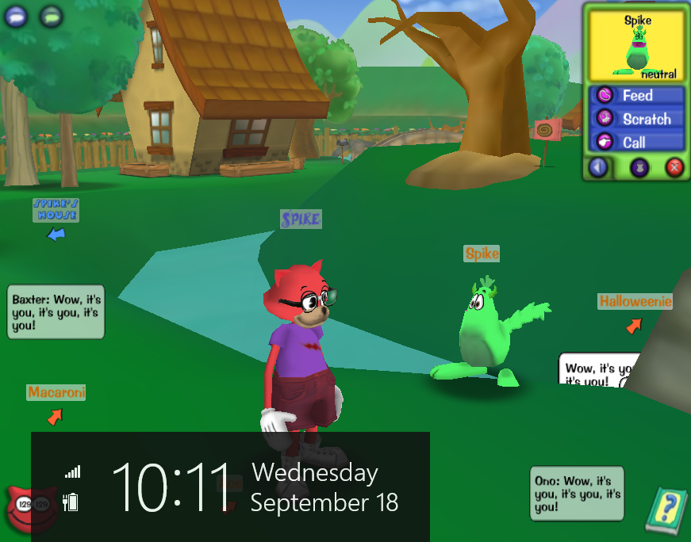

I am Spike! Your great and humble host. Welcome to or welcome back to Spike's Rewritten Guide ! If you are new to this site, I am excited to have you! If you are returning, I appreciate your loyalty. Since you are on this page, I am glad to assume you have decided to show some interest in why this site exists and to find out a little bit more about me!
If you have a question or want to send me a greeting, you can reach out to me here.
As an easy answer, Spike is me!
To be more complex... Spike is a red cat from the original Disney's Toontown Online game. As Spike, I reached 129 laff and roamed the streets of Toontown as a lureless toon. I always had a dream of making it to at least 130 laff points, but alack, Disney's Toontown decided to close back in 2013. Spike was a major part of my childhood, which is why I kept my online persona as Spike and named this website after him.
Of course, that does not explain why there is a weird looking light-blue cat with glasses running around this website...
Move your mouse over here (click if on mobile) to see Spike on the last day of Toontown. 
That light-blue cat you're are seeing everywhere goes by the name Oreo and is, well, also me! Oreo is a 119 laff dropless toon from Toontown Rewritten. He received a beta key at the early stages of Toontown Rewritten and has been running about the streets ever since. Oreo is who you will notice demonstrating almost all of the content on this site.
So if you refer to me as either Spike or Oreo, I will react just the same!
I cannot believe you asked this question...!
All jokes aside, this Rewritten guide is here to help you navigate your way through toon tasks and other extra activities. If you ever had a question about how you do anything online Toontown, here is the source to find your solution!
This site will be constantly updated to enhance quality and add new content. If you believe something is unclear or should be added, please feel free to let me know here! I appreciate any user feedback.